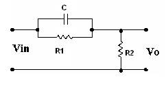

7.2.1 : A) Title of the experiment: Frequency response of a lead network
7.2.2: Aim of the experiment: To determine frequency response of a lead
network.
7.2.3: List of equipments:
Sl No. Item Specification Quantity
1) A F O 10Hz –1 M Hz/15Vrms 1
2) C R O 0-20 MHz/80 Vpp 1
3) Capacitor 0.1micro Farad 1
4) Resistor 6 k, 1.2 k 1each
7.2.4: Experimental Setup:

7.2.5: Theory:
The primary function of lead compensator is to reshape the frequency response curve to provide sufficient phase lead angle to set the excessive phase –lag associated with components of the fixed system.
The transfer function for the lead network is given by
Vo(s) R2
------ -- = ------------------------
Vi(s) R1/SC
R2 + -----------
R1+1/Sc
(S+1/R1C)
= -------------
S + 1/R2/(R1+R2) R1C
R2
τ = RIC α = -------
R1+R2 < 1
7.2.6: Design equations:
Let Qm = 450
1- α
Sin Φm= --------
1+ α
α = 0.17
R2
α = ---------
R1+ R2
R2
0.17 = --------- ------------ (1)
R1+R2
1
W = ----------- rad/sec
τ√ α
1
f = -----------
2 Π τ√ α
Let f = 650 Hz and α=0.17
τ = 0.593x10-3
we have τ = R1x (0.1 x 10-6) F
R1 = 5.93
R1=6K
From equation 1, 0.17=R2/(6K+R2)
R2= 1.2KΩ
Designed Values:
α = 0.17
f = 650 Hz
C= 0.1 μF
R1 = 6 KΩ
R2 = 1.2 KΩ
The sinusoid T.F can be written as
1+jwT
Gc (jw) = ------------- α <1
1 + jαwT
Since α <1 the N/W o/p leads the sinusoid input under study state hence the name lead compensator
The phase lead W is given by
Φ= tan-1w τ – tan-1 α w τ
tan-1(1-β) 1
Φ = ------------- wm = --------
1+ α w2 τ2 τ√ α
At w = wm tan Φm = (1- α) / 2√ α
Sin Φm = (1- α) / (1+ α)
1 – Sin Φm
α = ---------------
1+ Sin Φm
7.2.7: Procedure:
at varying input frequencies.
7.2.8: Table of observation:
Frequency response
Vin = 1V(constant)
Fin (Hz) |
Vout (volts) |
Phase (degrees) |
|
|
|
|
|
|
7.2.9: Specimen calculations: ---- Not required ------
7.2.10: Plotting of graph:
Gain Vs frequency
Phase Vs frequency
7.2.11: Conclusion:
By conducting the above expt, we can say that the primary function of lead compensator is to reshape the frequency response curve so as to provide sufficient phase lead angle.